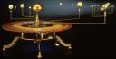

Solar System Live was implemented by John Walker in February and March of 1995. The calculation and display software was adapted from Home Planet for Windows. See the details for additional implementation information.
The GIF output file generation is based upon the ppmtogif
module of Jef Poskanzer's
pbmplus toolkit, of which many
other components were used in creating the images you see here.
ppmtogif.c - read a portable pixmap and produce a GIF file Based on GIFENCOD by David Rowley [mgardi@watdscu.waterloo.edu]. Lempel-Zim compression based on "compress". Modified by Marcel Wijkstra [wijkstra@fwi.uva.nl] Copyright © 1989 by Jef Poskanzer. Permission to use, copy, modify, and distribute this software and its documentation for any purpose and without fee is hereby granted, provided that the above copyright notice appear in all copies and that both that copyright notice and this permission notice appear in supporting documentation. This software is provided "as is" without express or implied warranty. The Graphics Interchange Format© is the Copyright property of CompuServe Incorporated. GIF(sm) is a Service Mark property of CompuServe Incorporated.
Steven Grimm's
uncgi
made the task of processing form arguments in the server immeasurably
easier.

The mechanical orrery shown in the heading of the main page is in the
National Air and Space Museum of the
Smithsonian Institution in
Washington DC in the United States. The image is © Copyright
1993 Smithsonian Institution.
The algorithms to calculate the positions of the Moon, planets, asteroids, and comets are given in:
Meeus, Jean. Astronomical Algorithms . Richmond: Willmann-Bell, 1998. ISBN 0-943396-63-8.
|
|